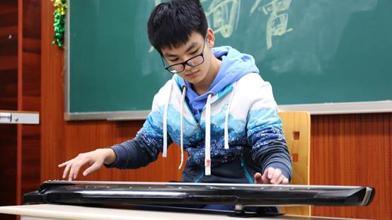
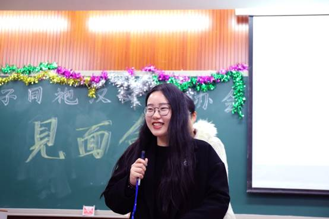
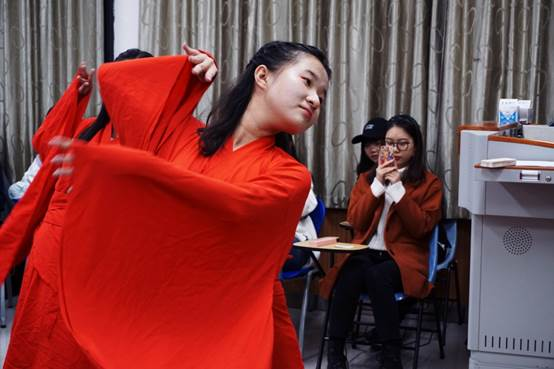

合肥师范学院汉文化协会于2021年3月22日在大学生活动中心举办了一年一度的社庆兼新社员见面会。本次活动由共青团合肥师范学院委员会主办，由汉文化协会承办，笛箫协会及歌乐相声社协办。
本次见面会旨在新老社员见面交流，展现我社文化风采，同时有安徽建筑大学等校同袍共赴此会。众宾就座后，主持人宣布见面会正式开始，随即由汉协古琴组刘山为大家带来优美琴曲《关山月》，琴音清婉，声意具备，引人遐思九天之外，见关山明月，又闻清寒鼓角。琴曲毕，刘山为在座简略讲解了古琴相关常识。

之后为拍七令游戏环节，游戏使所有在场者都参与到了游戏之中，现场气氛热烈，游戏参与度极高。在游戏环中共有八位同袍上台表演，其中汉协刘思瑶演唱《牵丝戏》，又作《采薇》舞，使现场气氛更为热烈。

接着由笛箫协会的干事为大家带来笛箫曲目《大鱼海棠》，空灵悠然，使观众都进入了《大鱼》中飘渺梦幻的世界之中。紧接着是投壶，游戏参与者将手中的竹条投向一米远的竹制圆筒，投入数量较多的参与者获胜。在这个环节中，场下观众纷纷为场中竞赛的参与者鼓劲。然后由歌乐相声社的干事给大家带来了精彩的相声表演，引起场内的阵阵欢笑。最后由汉协汉舞队新成员为大家展示她们入会后的第一支汉舞成果《礼仪之邦》，用其优美的舞姿表现了作为礼仪之邦的华夏传统文化的厚重底蕴。

在汉舞队成员的袅娜舞姿中见面会落下了帷幕，相信在见面会中的欢声笑语以及各种汉文化项目能给在场观众带去古典传统文化的雄奇瑰丽与美好曼妙。
责任编辑：团委